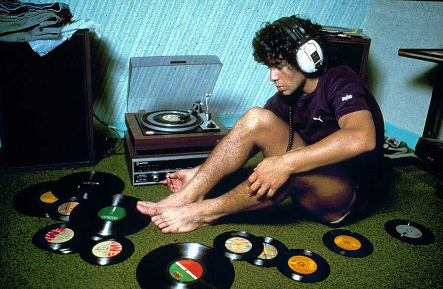

En Construcción
Estamos afinando los instrumentos y procesando los datos líricos de este proyecto. Estará disponible muy pronto.
Work in Progress
We are tuning the instruments and processing the lyrical data for this project. It will be available very soon.
